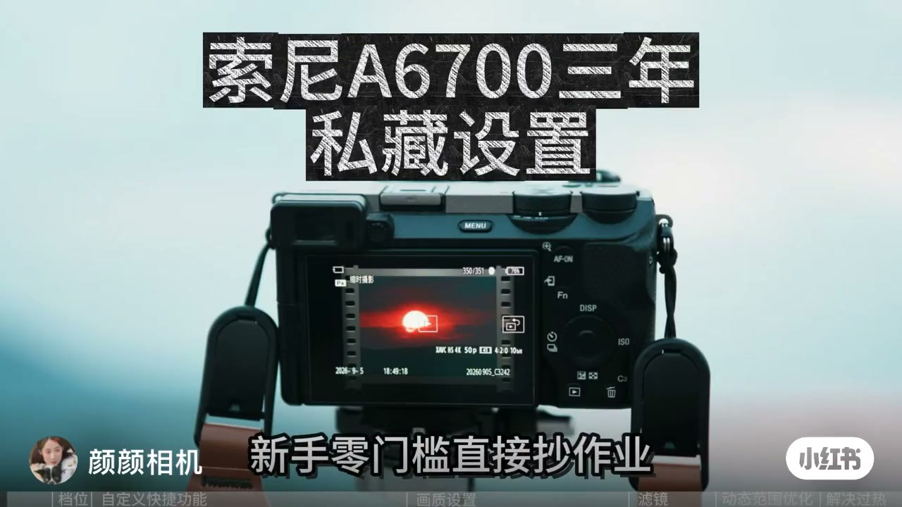
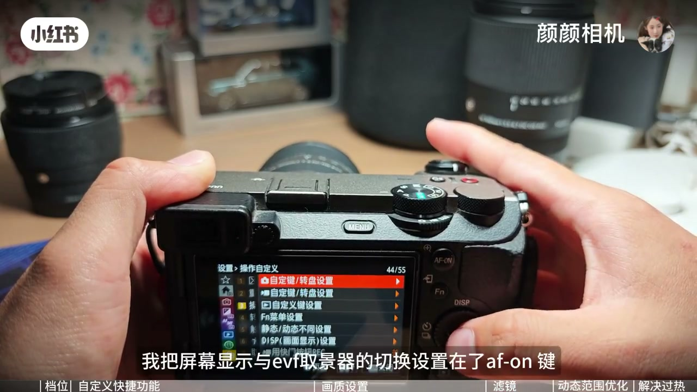
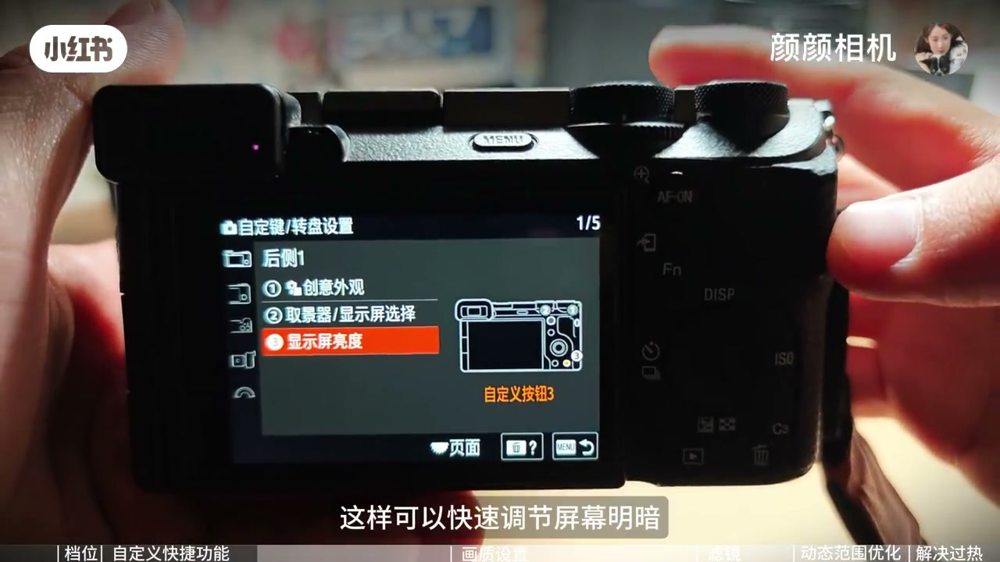
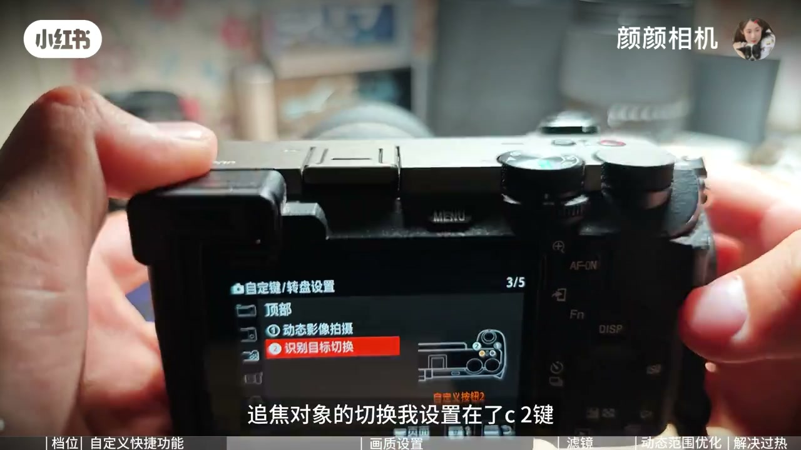
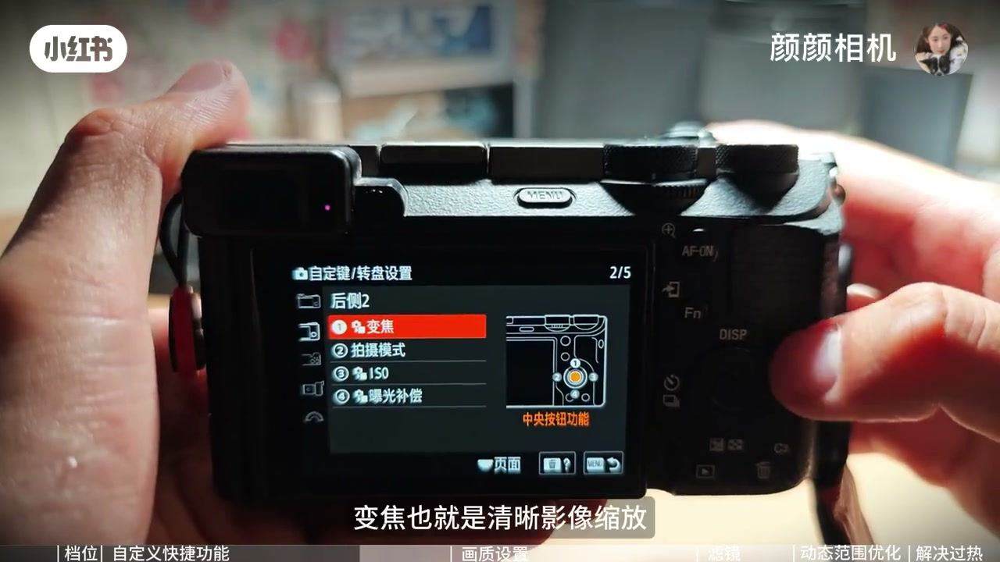
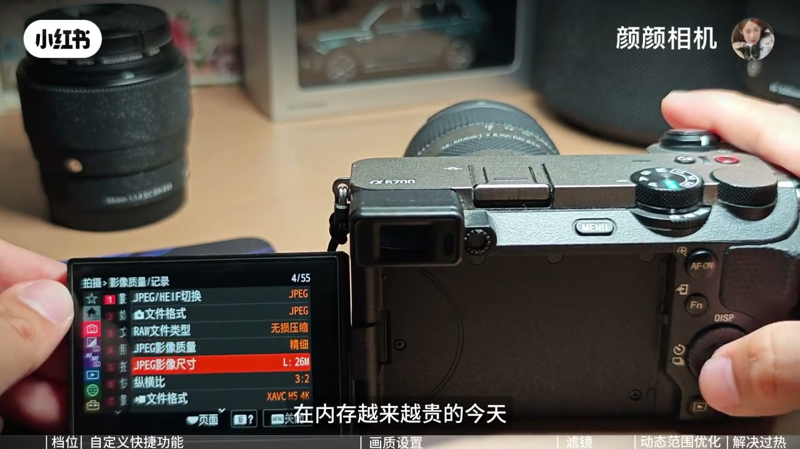
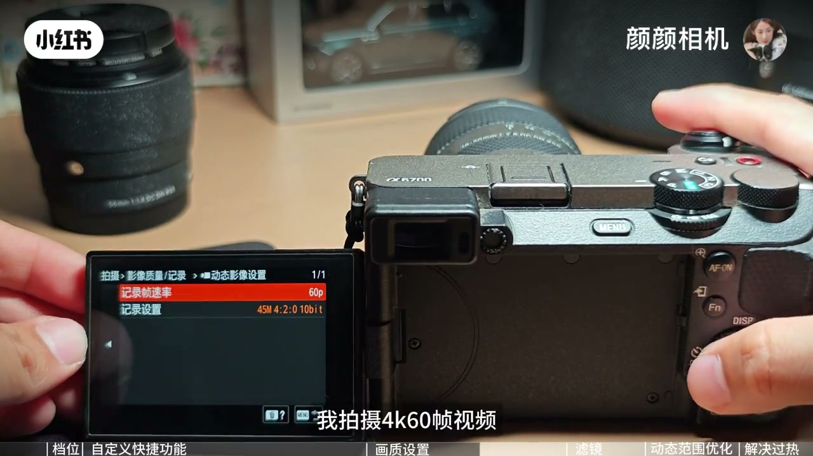
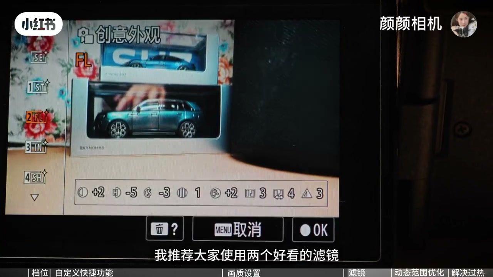
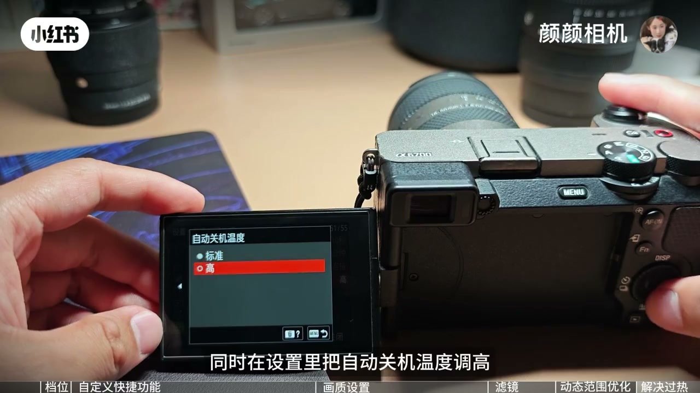

内容要点
口播大约五分钟，但 00:04 到 00:30、01:25 到 01:55、03:14 到 03:44 这三段几乎没说清。中间那段还被听成一串「键」。菜单名称以下面章节里的画面为准，文末转录只保留识别结果。
知识结构
开场只问到 A6700 的参数。画面字幕补上：这台机器实打实用了三年，今天不讲虚参数，内容是个人习惯。延迟摄影和直出慢动作升格，她说都在 S&Q 里。
上面一页管拍照，下面一页管视频。AF-ON 改成屏幕和取景器切换，并关掉取景器自动开启。删除键位置调屏幕亮度。C2 是识别目标切换。转盘中心是清晰影像缩放，给定焦补焦段。她说熟练后可以单手，少去点屏幕。
她的拍摄思路是省后期，基本靠直出。照片质量设成精细，是为了少占卡。对焦用 AF-C。她说 V60 能拍 4K 60 帧，120 帧要 V90。好光拍 4K 60，暗光拍 24 帧，并选最低码率。
03:14 到 03:44 转录是空的。画面经过 NTSC/PAL 选择器，以及 S&Q 档位下的延时和慢动作菜单。口播恢复后，FL 被她说成胶片感、对比强、高光易过曝；IN 偏氛围，适合人像和美食；SH 拍糖水片；VV2 鲜艳，给日落和花草。
照片发灰、没有质感时，她让人先看动态范围优化是不是开得太高。她自己通常关掉或只开 1 档；要留明暗细节再开。机身防抖她一直开。走路手持仍不够稳，要丝滑就改拍慢动作升格。
她说 A6700 会过热关机。长时间录制时打开显示屏，并把自动关机温度调高。还不够就贴冰凉贴。最后说每个场景参数不同，要把机器调成自己顺手的状态。
能直接照着找的是菜单路径和按键分工。V60、V90、最低码率和冰贴能撑多久，都是她的实测说法，视频没有给出温度曲线或失败次数。创意外观调节条上的具体格数，这一版笔记不引用。
00:00–00:48
片头答应抄作业，口播先停了二十多秒
00:00 她只说有粉丝朋友问 A6700 的参数设置。说到 00:03 口播就断了，一直到大约 00:30 才接上「延迟摄影和直出慢动作升格视频都在 SQ 内」。这二十多秒不是没内容，字幕在往下写：这台机子实打实用了三年；今天不讲虚的参数；适合日常拍摄的设置和小技巧；视频纯属主观见解；首先是机身外部操作；A6700 有拍照、视频和 S&Q 三个档位，要搞清用途。

回放画面底部能读到一条记录格式，像是 XAVC HS 4K 50p。这是片头里正在播放的旧素材，不是她后面口播推荐的 60p 设置，两处不要混成一条参数。
「机身自动生成的延迟摄影和直出慢动作升格视频都在 SQ 内。」
SQ 在这里按索尼机身写法理解成 S&Q，也就是慢与快。她没有在这一分钟里演示怎么生成延时或升格，只是先把入口说死：这两类成片从模式拨盘的 S&Q 进，不从普通视频档里找。
00:48–02:23
自定义键：上面管拍照，下面管视频
00:37 她把三年习惯收成一句：提升拍摄效率的关键是自定义按键。00:48 进入设置，找到自定义键、转盘设置。她特别说上面控制拍照，下面控制录视频。同一颗键在两种模式下可以不是同一个功能，抄的时候要看自己正停在哪一页。

第一项是屏幕和取景器。口播把 AF-ON 叫成「AF 按键」：切换设在这颗键上，并且关闭取景器自动开启。01:04 画面进到取景器/显示屏这一栏，右边能看到「选择取景器/显示屏」和显示屏亮度。她的理由是这样更能控制取景器开关，不用靠眼睛靠近感应器。视频没有演示感应器误触发，这条是她的使用理由。
01:16 转到屏幕亮度，设在删除键，用来快速调明暗。01:20 的菜单把这件事写具体了：自定义按钮 3 对应显示屏亮度。删除键和「按钮 3」是同一颗键的两种叫法，一个是键帽上的垃圾桶，一个是菜单示意图的编号。

接下来口播崩了。01:25 到 01:55，Whisper 先说出「追焦对象的切换我实施在了 C2」，然后连打十几个「键」。画面没有在重复按键。01:28 菜单页是顶部、自定义按钮 2，高亮项是「识别目标切换」，字幕写成：追焦对象的切换我设置在了 C2。几秒后的实况界面左下能看到「识别目标：昆虫」，说明这颗键切的是识别对象，不是对焦点的左右移动。

同一段废转录的后半句其实在讲另一项功能。01:52 菜单后侧第 2 页，第一项「变焦」被指定到中央按钮。字幕写「变焦也就是清晰影像缩放」，接着才接上口播里还能听清的那两句：用定焦时经常会用，可以在一定程度上补焦段缺失。所以转盘中心不是曝光补偿，也不是对焦。曝光补偿在这页的列表里是另一行，这一帧没有把它选中。

预览拼图里还有一句字幕，说侧面 C1 用来快速切换创意外观。这句话没有落在上面这几张全尺寸帧的菜单行上，所以这里只当作画面字幕，不写成已经核对过的按键表。
02:04 她把这组键收束成单手：常用项放在快捷键上，熟练后不用点屏幕，也不用在菜单里翻，免得错过瞬间。02:18 她补了一句边界，建议按自己的拍摄习惯改，不要原样锁死。
02:23–03:14
画质页：精细、连续对焦，好光才上 4K60
02:23 话题从机身外面转到内部画质。她的思路很短：方便快捷，省掉后期调色，基本靠直出。照片质量一般设成精细。理由是内存越来越贵，尽量少占，同时仍要较好的画质。这是取舍，不是「精细等于最好」。

这一页还能看到 JPEG/HEIF、文件格式、RAW 文件类型、纵横比，以及视频文件格式 XAVC HS 4K。文件格式那一行画面显示的是 JPEG。口播没有说她同时存 RAW。旁边的 RAW 文件类型仍然出现在列表里，不能据此写成 RAW+JPEG。
02:42 对焦模式设成 AF-C，她说这样更好发挥追焦。画面在前后切过玩具车的实况，没有做一组 AF-S 和 AF-C 的对比，所以「更好发挥」是她的判断。
02:49 开始讲卡。她说实测 V60 可以很好拍摄 4K 60 帧；120 帧则需要 V90，价格更贵。光线好时她拍 4K 60，暗光改拍 24 帧。然后是一句容易被听漏的操作：选择最低码率，画质也相当不错，可以省不少内存。03:04 的动态影像设置把「最低」落到这一帧上：记录帧速率 60p，记录设置一行是 45M 4:2:0 10bit。同一菜单里还有更高的码率行，她的手停在偏低的这一档。是不是所有帧率下的最低项，视频没有逐条翻完。

03:14–04:12
空了半分钟，再讲 FL、IN、SH 和 VV2
03:14 到 03:44 这一段 Whisper 是空的，标成无口播。画面没有停。03:16 左右设置菜单停在区域/日期，子项里能看到 NTSC/PAL 选择器。预览拼图上有人读到「可能显示 50 帧和 100 帧、改选 NTSC」之类的字，全尺寸这一帧没有把警告对话框定住，所以笔记不写 50 和 60 的换算，只确认她翻过这个选择器。
03:28 回到拍摄里的影像质量。红条停在延时摄影设置，上面还有慢和快设置。字幕写：S&Q 档位下的延时摄影和慢动作，也可以单独设置画质和速度。这和开场那句「都在 SQ 内」对得上，只是口播本人在这半分钟里没有再说一遍。
03:44 声音回来，直接进入创意外观。她把 FL 说成有富士胶片的感觉，对比强烈，高光容易过曝。用法是曝光降一档，或把高光降低。03:40 画面已经停在创意外观，当前选中 FL，预览是两盒车模。调节条上有对比、高光、阴影等格子，字太小，这一版不引用具体加减数字，避免把看不清的格数写成她的配方。

后面三个名字口播说得很密，画面没有给每一套单独停够。IN 被说成自带 Instagram 那种氛围，对比适中，氛围强，拍人像和美食很出片。识别稿写成「出篇」，按画面字幕改成出片。SH 适合糖水片。VV2 很鲜艳，可以拍日落和花草。这是她的场景分配，不是这四个预设的官方定义。
04:12–04:43
发灰时先怀疑动态范围优化开高了
04:10 她换了一个故障现象：如果觉得照片发灰、没有质感，先看动态范围优化是不是开着较高档位。识别稿这里听成「尾班是关闭或者开了一档」。04:12 画面字幕是「我一般是关闭或者开了 1 档」，菜单标题就是动态范围优化，选项有自动、Lv1、Lv2、Lv3，当前停在 1 级。需要保留更多明暗细节时，她才说可以开启。
所以她的默认不是「开得越高越有细节」。发灰被她归到高档位；1 档或关闭用来把质感拉回来；要细节时再往上开。视频没有并排样张，强弱要靠这句话本身。
04:23 机身防抖她说一直开启。紧接着承认走路手持基本不够稳。想要画面稳定、丝滑，就要去拍慢动作升格，而不是指望防抖把步伐完全抹平。升格入口仍是前面的 S&Q。
04:43–05:16
过热关机：开屏、把温度阈值调高、再贴一张冰贴
04:34 她直接说 A6700 会过热关机。实测对策有两条在菜单和机身姿态上：长时间录制时打开显示屏，录制时长会持久一点；同时在设置里把自动关机温度调高。识别稿把「持久」听成「迟久」，画面字幕是持久。04:44 菜单只有标准和「高」，红条在「高」。

若还不够，她自己搭配冰凉贴辅助散热，说对长时间录制有一定帮助。04:52 画面是一张绿色包装，上面有熊猫，贴纸写着「荷叶」。笔记只把它当成她出示的那张贴，不补充导热数据，也不把「一定帮助」写成能避免关机。
04:55 她收束整支片子：相机从来没有固定的参数设置；每个场景环境不同，应对的参数也不同；多体验、多拍摄，渐渐把机器设置成自己最顺手的状态，留住身边的美好。片头的「直接抄作业」和这句结尾并排放着。抄的是她的按键和菜单入口，不是一套放之所有场景的曝光配方。结尾画面切到草原和牦牛，不再操作机身。